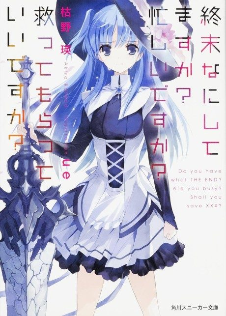

WorldEnd: What are you doing at the end of the world? Are you busy? Will you save us?
終末なにしてますか? 忙しいですか? 救ってもらっていいですか?
After the anime, read the light novel from Volume 4.
7.5AniList score
—Animeter, no votes yet
12episodes
Anime finished. Where does the story go next?
Start at Volume4
The anime ends at the end of volume 3, so start at volume 4. The light novel is finished; the sequel series SukaMoka follows.
135 end
Season 1Start reading here